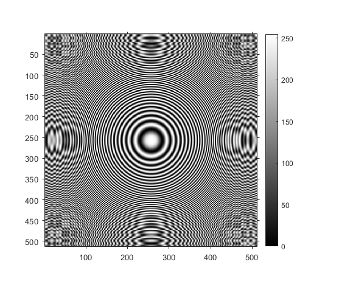
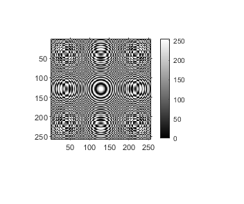
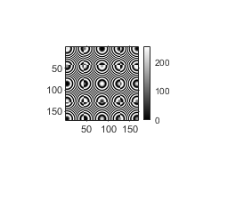
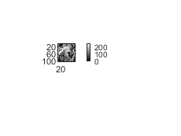
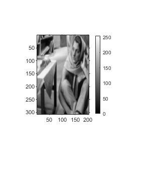

Contents
MyMainScript
tic;
PART (a)
imgPath = "..\data\circles_concentric.png";
img = imread(imgPath);
figure("Name", "(a) Original image"), imshow(img);
colorbar;
axis image;
axis on;
d1 = 2;
d2 = 3;
figure("Name", "(a) Image with shrink factor = 2"), myShrinkImageByFactorD(img, d1);
figure("Name", "(a) Image with shrink factor = 3"), myShrinkImageByFactorD(img, d2);
  
pause(10);

PART (b)
imgPath = "..\data\barbaraSmall.png";
img = imread(imgPath);
figure("Name", "(b) Original image"), imshow(img);
colorbar;
axis image;
axis on;
figure("Name", "(b) Image enlarged using bilinear interpolation"), myBilinearInterpolation(img);
 
pause(10);
PART (c)
figure("Name", "(c) Original image"), imshow(img);
colorbar;
axis image;
axis on;
figure("Name", "(c) Image enlarged using nearest neighbour"), myNearestNeighbourInterpolation(img);
toc;
Elapsed time is 27.242888 seconds.